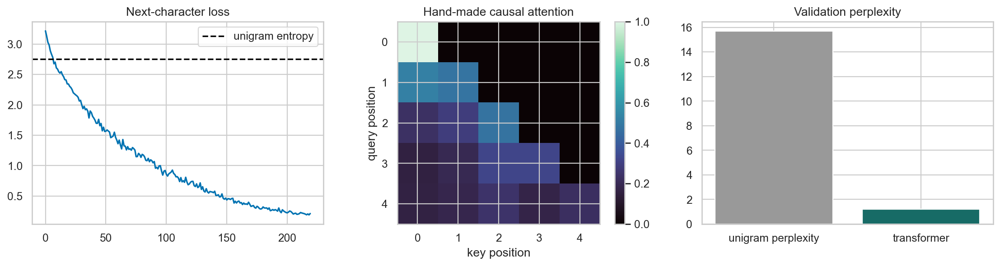

ML Hands-on Lab · 09 — Neural networks
Attention and a tiny character transformer
Attention computes a content-dependent weighted average of earlier representations. In next-character training, a causal mask is what prevents those weights from reading the answer at a future position.
Read this page independently, then run the notebook cells in order. The figure below is a preserved historical notebook output; no model training was rerun for this editorial revision.
1. The experiment and its boundary
A short nursery verse is repeated 35 times and encoded as character IDs. Each input contains 24 consecutive characters; its target is the same window shifted one character forward. The notebook reserves a tail near the 85% point for sampled validation windows, with preceding context included.
This is a one-layer, small-character-model mechanism experiment. Both portions repeat the same verse, and validation windows can overlap the cutoff context. A low tail loss demonstrates learning that repeated sequence; it is not evidence of generalization to unseen documents or language-model capability.
2. The mechanism
For hidden vectors X, learned projections form queries Q, keys K and values V. A query-key dot product measures compatibility. Dividing by the square root of key dimension helps keep large dot products from immediately saturating softmax.
A = softmax(QKᵀ / √d_key + causal_mask)
attention_output = A V
loss = mean(−log p(next_character | visible_prefix))
Each row of A sums to one. Future positions receive negative infinity before softmax, hence zero weight. The model combines token and position embeddings, applies a four-head transformer block, and maps its output to vocabulary logits. Cross-entropy supervises every position in the window at once.
3. Work through a tiny example
Scores [2, 1, 0, −1, −2] yield approximate softmax weights [.636, .234, .086, .032, .012]. If only the first three positions are visible, masking the last two gives [.665, .245, .090, 0, 0]: the remaining weights are renormalized, not simply truncated.
For input c a t, the first target is a. Without the mask, the first query can attend to the second input character—the target itself. A falling loss can therefore indicate a shortcut that is unavailable during generation.
4. Settings that change this experiment
| Notebook setting | What it changes |
|---|---|
| Context: 24 characters | Longer context can expose more useful history but attention work grows roughly quadratically with sequence length. |
| Hidden dimension 24; 4 heads; feed-forward width 48 | Each head uses six channels. More width and heads increase capacity and compute; they do not fix future-token leakage. |
| 220 steps; AdamW lr=.004; dropout=0 | This short run demonstrates optimization on repeated text. Change one setting at a time and retain the causal mask. |
5. The actual notebook operation
These are the actual core operations from the matching notebook, reformatted for readability. They use the data, imports and variables defined in earlier cells; open the notebook to execute the complete experiment.
Notebook cell 12 · counting all cells from 1
d = 24
class TinyTransformer(nn.Module):
def __init__(self, causal=True):
super().__init__()
self.causal = causal
self.tok = nn.Embedding(vocab, d)
self.pos = nn.Embedding(context, d)
layer = nn.TransformerEncoderLayer(d, 4, 48, batch_first=True, dropout=0)
self.block = nn.TransformerEncoder(layer, 1)
self.head = nn.Linear(d, vocab)
def forward(self, x):
z = self.tok(x) + self.pos(torch.arange(x.shape[1]))
mask = nn.Transformer.generate_square_subsequent_mask(x.shape[1]) if self.causal else None
return self.head(self.block(z, mask=mask))
model = TinyTransformer(True)
opt = torch.optim.AdamW(model.parameters(), lr=0.004)
losses = []
for step in range(220):
(x, y) = batch('train')
opt.zero_grad()
logits = model(x)
loss = nn.functional.cross_entropy(logits.reshape(-1, vocab), y.reshape(-1))
loss.backward()
opt.step()
losses.append(loss.item())
print('Parameters:', sum((p.numel() for p in model.parameters())), 'loss first/last:', round(losses[0], 3), round(losses[-1], 3))6. Baseline and what the metrics mean
The dashed baseline is unigram entropy: predict characters only from their frequencies, ignoring context. Perplexity is exp(mean cross-entropy), so smaller is better. Here frequencies are counted over the full repeated corpus; this is a reference entropy, not a separately fitted, strictly held-out benchmark. The notebook prints the transformer tail-window perplexity and this reference.
7. Read the historical figure

- Left: historical next-character loss drops below the frequency-only reference as the model learns the repeated verse. This is not an unseen-text result.
- Middle: the lower-triangular matrix comes from five hand-made query/key vectors, not extracted trained attention weights. The black future triangle is the causal constraint.
- Right: historical perplexity compares context-aware prediction with unigram entropy on this small repeated corpus; it does not establish a general transformer advantage.
8. Break the assumption
The final cell constructs TinyTransformer(False), removing the mask, and trains it for 100 steps. It can see future input characters that reveal shifted targets. Its validation loss is therefore invalid as a next-character-generation score, however low it becomes.
The masked and unmasked runs also use different training budgets and fresh initialization. The experiment exposes the leakage mechanism; it does not measure an isolated quantitative effect of masking. A fair extension would match initialization and steps, then evaluate both using only genuinely available prefixes.
9. Exercises with a decision to explain
- On paper, write input and shifted-target windows and mark exactly which input position would leak each answer without a mask.
- Generate one character at a time using only the current prefix. Compare that behavior with the teacher-forced loss; do not give the model future tokens at inference.
- Replace the repeated verse with separate training and validation texts, build character-frequency baselines from training only, and keep model budgets equal.
10. Run and inspect
Change one assumption at a time, keep the appropriate evaluation boundary, and compare the actual results. A baseline win or an inconclusive result is useful evidence.